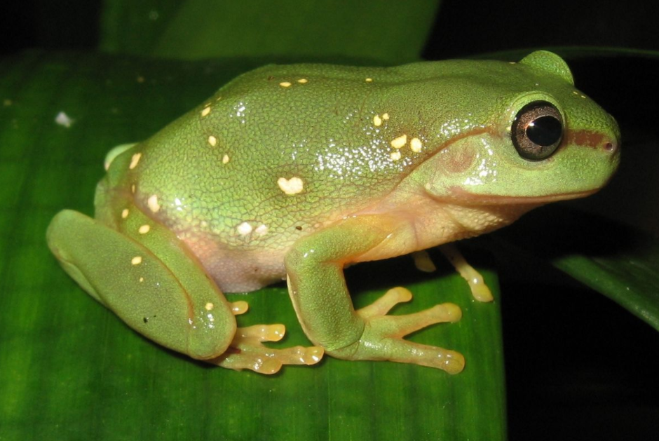

- 오스트레일리아청개구리
- 사막비개구리
- 페도프라이네 아마우엔시스
오스트레일리아청개구리
오스트레일리아청개구리(Australian green tree frog)는 오스트레일리아와 뉴기니 원산의 청개구리과에 속한 청개구리의 일종이다.
미국과 뉴질랜드에도 외래종으로 흘러들어갔는데, 뉴질랜드에서는 멸종된 것으로 여겨진다.
형태학적으로 오스트레일리아청개구리속의 다른 청개구리, 특히 예쁜청개구리와 왕청개구리와 많이 닮았다.

왕청개구리를 제외한 대부분의 오스트레일리아 원산 개구리들보다 덩치가 크다.
보통 신장 10 센티미터 이상까지 자라고, 사육 상태에서 수명은 평균 16년으로 개구리치고 장수한다.
성격이 유순하며 인간 거주지 주위에도 잘 적응하기 때문에
오스트레일리아 현지 가옥의 창문틀이나 실내에 붙어 살면서 민가의 불빛에 끌려온 벌레들을 잡아먹곤 한다.
건드리면 찍 소리를 내고, 천적 따위에 의해 겁을 먹으면 빽 비명을 지른다.